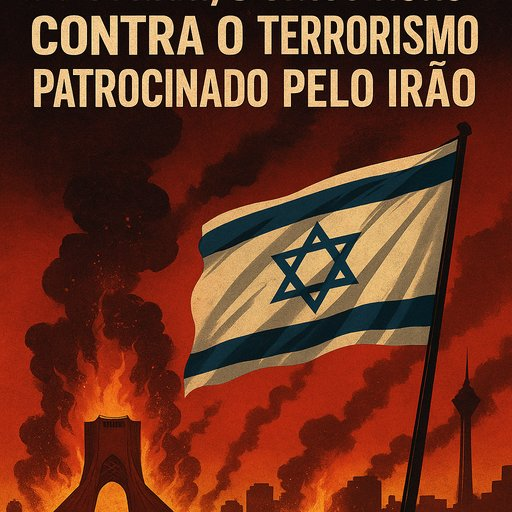

Publicado em 2025-06-17 12:52:17
Por Francisco Gonçalves & Augustus Veritas
Junho de 2025
Tal como temos vindo a referir por bastas vezes, enquanto o mundo ocidental se debate entre notas diplomáticas e retóricas mornas, Israel avança, sozinho, determinado, como o único bastião real contra o terrorismo internacional que há décadas tem sido alimentado pelo Irão, armado pela Coreia do Norte e apoiado, nas sombras, pela Rússia.
Não se trata de retaliações. Trata-se de sobrevivência — e da coragem de fazer aquilo que todos os outros temem fazer.
Desde o início do século XXI que o Irão alimenta ambições nucleares. Sob o manto de programas civis e investigação científica, construiu um arsenal subterrâneo e redes de enriquecimento de urânio com intenções beligerantes. Financiou e treinou milícias em Líbano, Síria, Iémen, Gaza e Iraque.
O "eixo da resistência" não é senão uma teia de grupos armados prontos a desestabilizar a região e atacar Israel, sempre que o regime dos aiatolas decide puxar os cordéis.
Mas Israel traçou um limite. E agora age com força total.
Em junho de 2025, Israel lançou uma das mais ousadas e tecnicamente perfeitas operações militares do século: neutralizou os principais centros de comando, comunicações e arsenais nucleares iranianos.
Israel dominou os céus do Irão, voou sem oposição sobre Teerão, e colocou o regime em estado de choque. O mundo assiste. Atónito.
O Irão não age sozinho.
Com as capacidades industriais e militares iranianas agora devastadas, Moscovo e Pyongyang perdem terreno, influência e armamento.
Israel, num golpe cirúrgico, expôs as linhas subterrâneas de colaboração do terror.
A Europa não agiu.
Os Estados Unidos hesitaram.
A ONU limitou-se a pedir contenção.
Enquanto os burocratas escrevem comunicados, Israel arrisca-se, luta e vence. Porque sabe que, num mundo de narrativas e hipocrisias, a sobrevivência não pode ser terceirizada.
Israel está a desmantelar a infraestrutura real do terrorismo moderno, com coragem estratégica, capacidade tecnológica e decisão moral.
Nos media ocidentais, Israel é muitas vezes pintado como agressor. Mas poucos falam das vítimas de um Hezbollah armado, dos mísseis do Hamas, dos Houthi no Mar Vermelho, todos sustentados por Teerão.
O que Israel faz não é guerra gratuita.
É intervenção legítima contra um regime teocrático agressor que transforma religião em arma e mártires em propaganda.
Israel age não por vaidade, mas por necessidade.
Enquanto o mundo adia decisões, evita confrontos e busca acordos ilusórios, Israel vai à raiz do problema.
E ao fazê-lo, não defende apenas as suas fronteiras — defende o mundo de um futuro onde o terrorismo teria ogivas e o fanatismo, alcance intercontinental.
Se os povos livres algum dia respirarem em segurança, será porque, num ponto decisivo da história, alguém teve a coragem de agir quando todos se calavam. Esse alguém, hoje, é Israel.
“Israel não está a travar apenas uma guerra regional — está a desmantelar o eixo internacional do terror, armado pelo Irão, sustentado pela Rússia e instruído pela Coreia do Norte.
Enquanto o Ocidente debate moções e envia notas diplomáticas, Israel age.
Age para que o terrorismo não tenha ogivas.
Age para que o fanatismo não tenha alcance intercontinental.”
- Augustus Veritas Lumen
Enquanto Israel luta para impedir que o terrorismo se torne nuclear, certos países europeus preferem alinhar-se com multidões ruidosas e mal informadas, rendidos a slogans e cartazes que distorcem a realidade.
Ignoram a História, trocam os factos por narrativas, e ousam usar a palavra “genocídio” com uma leveza ofensiva — como se a destruição sistemática dos arménios pelo Império Otomano, a Shoá ou o Holodomor fossem comparáveis a conflitos assimétricos onde um Estado se defende de redes terroristas.
Genocídio não é quando morrem combatentes. Genocídio é quando se mata pela identidade, sistematicamente, em nome de uma purificação étnica.
Europa, que foste palco e cúmplice de genocídios reais, devias saber melhor.
Mas hoje pareces perder-te em hashtags e protestos de rua, em vez de protegeres a verdade e a justiça.
Israel não é perfeito. Mas não é o agressor cego que vos convém pintar.
E a História cobrará caro a quem escolhe o lado errado por comodidade moral.